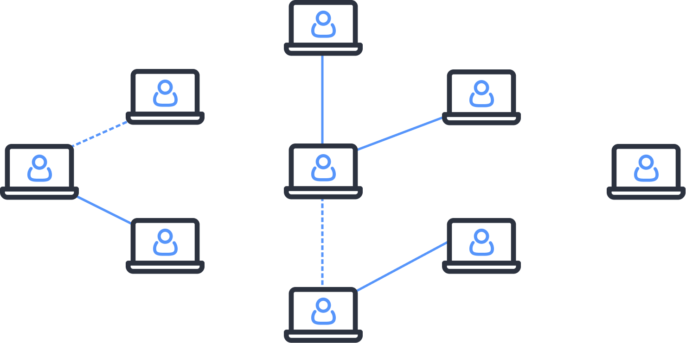
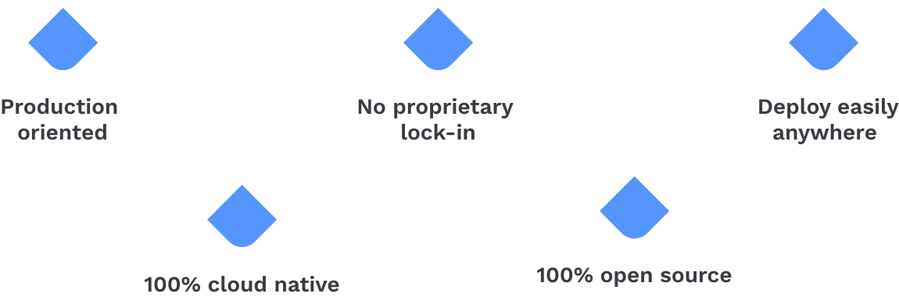
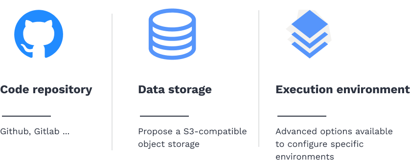
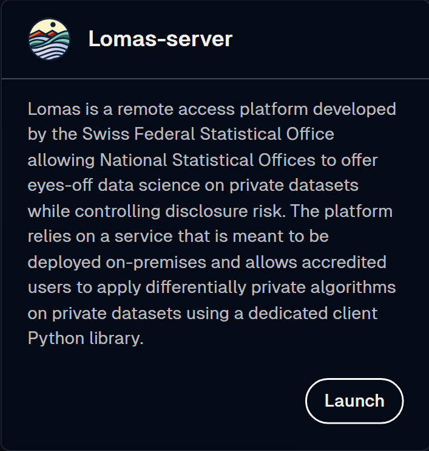
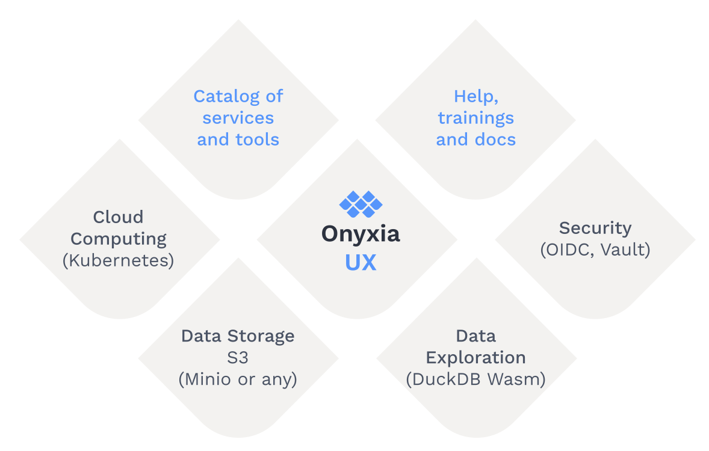
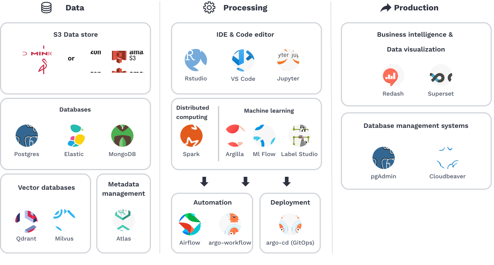

The European Open-Innovation Data Platform
30/09/2025
Isolated data scientists
Closed and rigid IT/Dev environments
👉 difficult to move to production


Open Innovation acts as a bridge between internal teams and outside networks




Onyxia:
Pre-print article on Onyxia
Open instance: SSP Cloud
🚀 Try out SSP Cloud Do it today!
💬 Join us on Slack
🛠️ Consider deploying a local instance
We are available for support!
🤝 get involved with the project:
“SSP Cloud : The European Open-Innovation Data Platform”